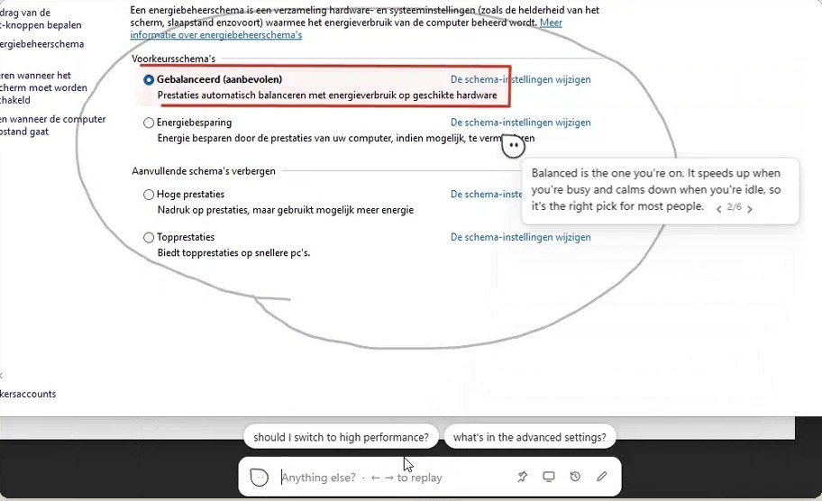
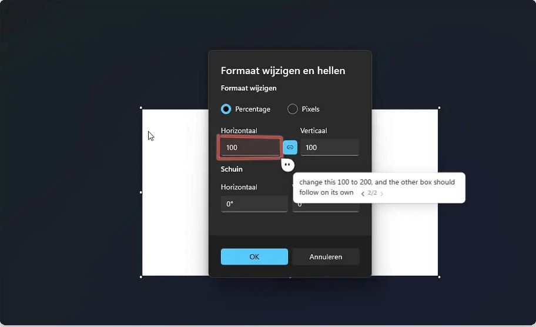
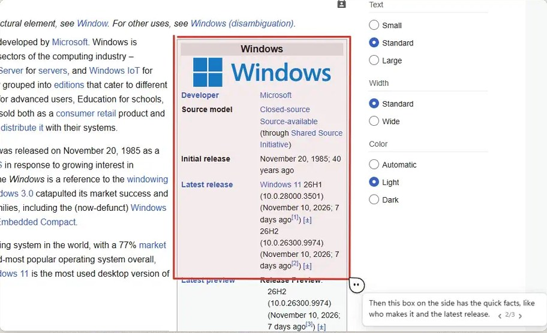
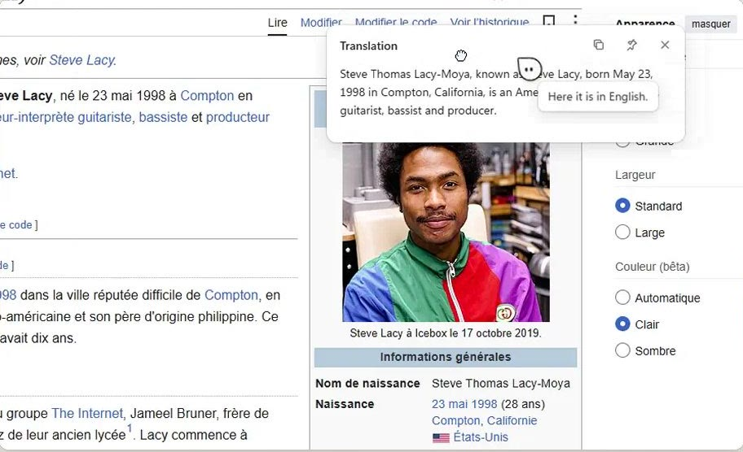
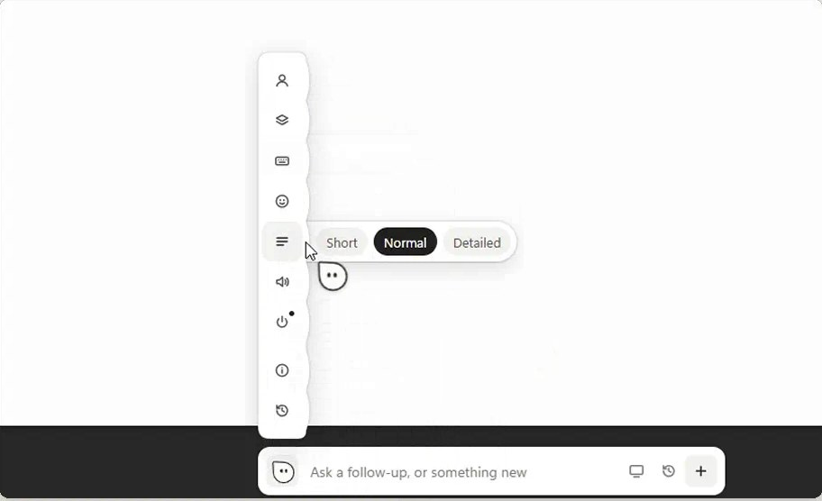

a little help, right where you're looking.
mallow, a desktop helper for windows and mac
press ctrl space in any app, circle what's confusing and ask. mallow answers in a short note right beside it, and marks the answer on your screen.
download mallowfree. it runs on your own claude pro or max plan, so there's no api key and nothing extra to pay.
1
- your circle around what you mean
- mallow's box on the answer
- its note, beside your cursor
- questions you might ask next
- the bar at the bottom of your screen
press, point, ask.
no window to switch to and nothing to describe. mallow already sees what you see.
press ctrl space
anywhere, in any app. on a mac it's ⌥ space.
circle what you mean
drag around it, click a spot, or just start typing.
ask in plain words
mallow answers beside it and marks the answer on screen. how-to questions come one step at a time: it waits, notices when you've done the step, and points at the next one.

- the field to change, boxed
- what to type, in plain words
- step 2 of 2

- a box on the part that matters
- mallow, right next to it
- what it is, in one line
it shows you where.
answers come with marks drawn right on your screen. they fade when you move on, or stay if you pin them.
- circles and boxes
- the thing it's talking about
- arrows
- which way to go
- highlighter
- under the line that matters
- spotlight
- dims everything else
- numbered badges
- what to do first, second, third
- labels
- names icons that have none
- ticks and crosses
- this one's right, that one isn't
- magnifier
- a bigger copy of tiny text
copy it, then ask.
copy some text and press the shortcut. mallow offers to explain, summarize, translate or rewrite it, one click and no typing.
it only offers. nothing is sent until you pick one, and single words like passwords are never offered at all.
7
it changes with the app you're in.
mallow knows which app is in front and answers the way that kind of work needs. it also learns what you usually ask in each app, so the suggestions when the bar opens become your own questions.
only counts and short preferences are kept, on your computer. you can see and change all of it in settings.

- the settings rail
- how long answers are
- click mallow's face to open it
which mallow will you get?
- 1writing code, in vs code or a terminalcodingthe fix first, then the file and the line
- not codego to 2
- 2designing, in figma or adobedesignsizes, hex codes and your client's brand rules
- not designinggo to 3
- 3in a spreadsheetsheetsplain words and a formula ready to insert
- no spreadsheetgo to 4
- 4writing a document or an emailwriting, mailtext you can paste straight in
- anything elsegeneralshort, plain answers about whatever's on screen
and the small things.
your screen, your business.
- it only looks when you open it. the screenshot only leaves your computer with a question you ask.
- it stays out of your recordings. mallow hides from screen capture, so it never shows up in screen shares or recordings.
- walkthroughs stay local. while it waits for your next step, it compares tiny grey copies of your screen on your computer. they're never saved or sent.
- copied text waits for you. it's only sent when you pick an action.
- no account and no analytics. your settings and history stay in your own user profile.
up and running in a minute.
- download mallow and open it. on windows it installs just for you, without admin rights. on a mac, drag it to applications.
- it asks what you mostly do. if claude code or your claude account is missing, it sets them up right there.
- it puts a small example on screen. press the shortcut, circle it and ask.
you need windows 10 or 11, or a mac with macos 12 or newer, and a claude pro or max plan.
13questions.
windows says it doesn't recognise the app
mallow isn't code-signed yet, so smartscreen warns the first time. click more info, then run anyway.
my mac won't open it
it isn't signed on the mac either. the first time, right-click mallow in applications and pick open, or go to system settings, privacy and security, open anyway. setup then asks for screen recording: turn mallow on there and let it reopen.
which mac download do i need?
apple silicon for m1 and newer, most macs from 2021 on. intel for older ones. the apple menu, about this mac, shows a chip (apple silicon) or a processor (intel).
is this made by anthropic?
no. mallow is an independent app. it uses your own claude account through anthropic's claude code, which you install and sign in to during setup.
ctrl space doesn't do anything
another app, often keyboard-language switching, may already use it. mallow then picks ctrl shift space and shows it during setup. you can change it in settings.